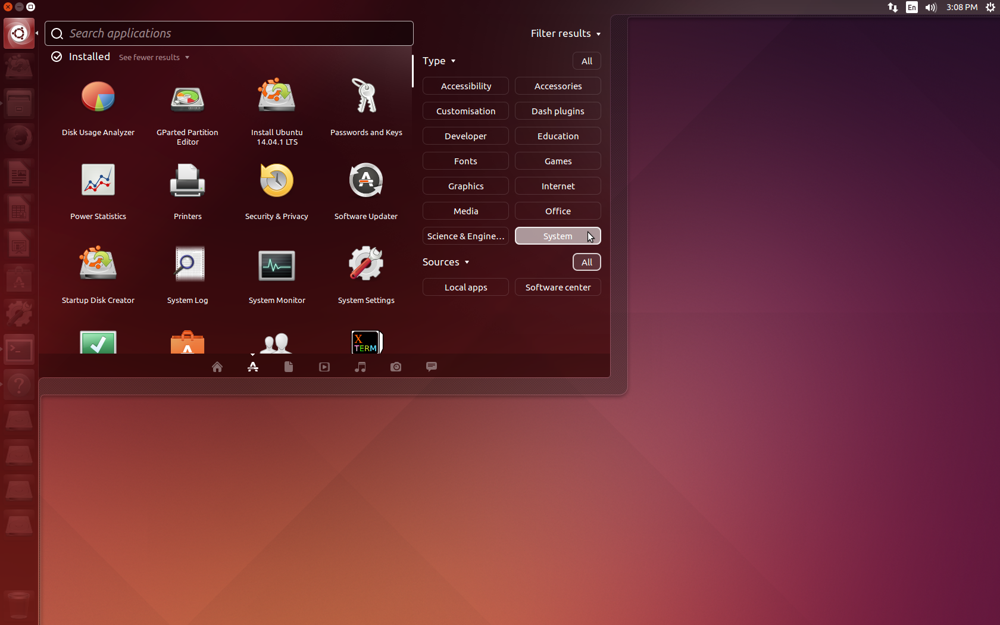

xfceをスタイリッシュにカスタマイズ！
xfce?ナニソレオイシイノ？
むっちゃ美味しいです（Linux的に）
みなさん、ふつうにubuntuをインストールした時のデスクトップって、こんな風になってると思われます。

これは、Unityと呼ばれるデスクトップ環境（略してデス環）です。
これはUbuntu標準採用だけあって、とても機能的なデス環です。しかし、こ困ったことに私の使ってるような貧弱pcにはすこしばかり重いデス環でもあります。
では、もっと軽いデス環 "xfce" をインストールしていきましょう。
xfceのインストール
それでは早速、軽量デス環xfceをインストールしていきましょう。今回もapt-getを使ったコマンドラインでの